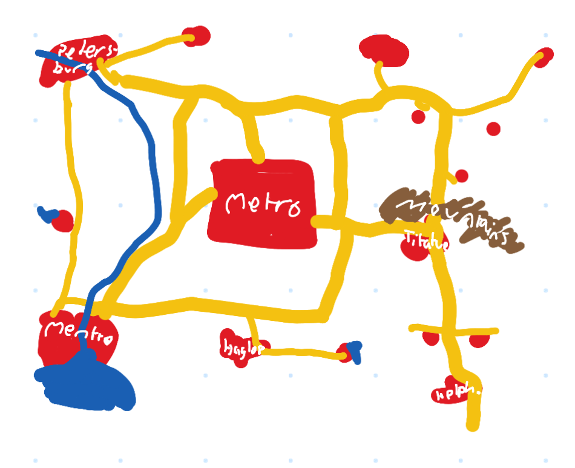

Metro Map for ETS2
I wanted to make a map for Euro Truck Simulator 2 based on my old creative mode world in Minecraft Wii U Edition for a long time. Everytime I got into it, I got frustrated with something. Let's try it again and hopefully not get frustrated :)
I'll post some logs of progress on the website. Why? Hopefully it'll keep me going. Idk.
Enjoy
What is "Metro"?
Trust me, it's not Microsoft's design philosophy since Windows 8 :)
Nope. It's instead how that world was called: Metro. Shares it's name with the "capital city" in the middle of the world.
This image shows how the map was imagined inside Minecraft years ago:
Here's a better understanding of how the map imagination expanded over the years:
[work in progress]
[work in progress]